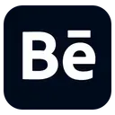
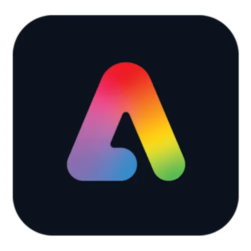
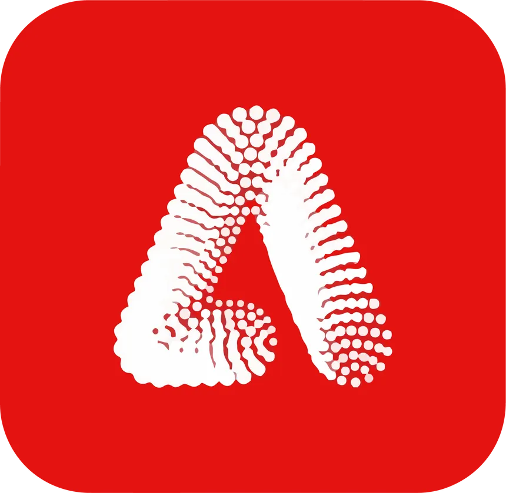
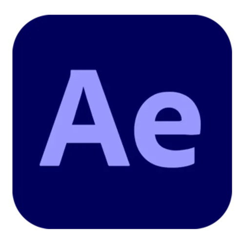
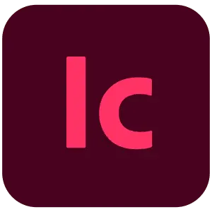
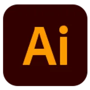
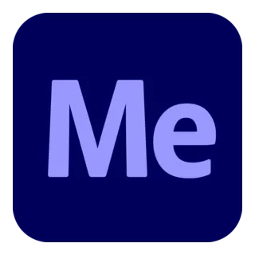
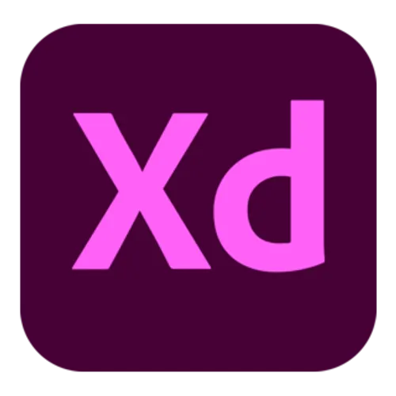

Mundo Zera's Craft
Pack completo da Adobe para seu PC!
Todos os Softwares da Adobe para a Versão Web!
Não se preocupem pois não tem vírus, são sites oficiais da própria Adobe.




Todos os Aplicativos da Adobe Atualiados e prontinho para download!
Não se preocupem pois não tem vírus (Utilizo o Premiere, After Media Encoder e Photoshop e tá deboa).
Podem baixar sem problemas.
Antes de mais nada, instale este arquivo OneClickFirewall e Execute como Administrador, após
isto este sistema estará integrado no seu PC.
Bem, este recurso simplesmente desabilita a Internet do Aplicativo ou Software Selecionado pelo Explorer. Explicarei mais detalhadamente sobre, nesta outra Aba ao Lado.
EXPLICANDO..
Muito bem, quando abrir o Site para Baixar o seu App da Adobe que estão listadas abaixo por Cards, você
vai baixar em .rar, então precisará do Software WinRAR para extraír as Pastas.
EXTRAÍNDO E INSTALANDO
# Após baixar o WinRAR, apenas instale no seu PC.
Agora com o .RAR da sua Adobe que você baixou, extraía com o seu WinRAR e lhe pedirá uma Senha: taiwebs.com, e então após descompactar verá uma pasta, dentro dela poderá ter (Adobe, Autoplay, Crack+ e alguns Arquivos), eu não sugiro Executar via autoplay.exe pois não sei se é seguro ou não, então abra a Pasta Adobe e Instale o Set-up.exe ou algo semelhante (Arquivo para Instalar seu App Adobe).
SEGURANÇA DO WINDOWS
Um aviso que devo falar rapidamente, é Desativar a Segurança do Windows (Proteção em tempo real, e etc..), pois se você executar e estiver ativada, o Set-up.exe (Arquivo de instalação do App Adobe), será deletado como medidas de segurança do Windows. Então Desabilite a Segurança nas Configurações ok.
ONE-CLICK-FIREWALL
Agora, após instalar NÃO ABRA O APLICATIVO! Calma.. Agora você deve procurar o Aplicativo Adobe desejado na aba de Iniciar (Tecla Win), e clicar sobre o Aplicativo da Adobe com o Botão Direito > Abrir Local do Arquivo > E então aparecerá alguns atalhos de seus Aplicativos, clique sobre o Atalho do seu App da Adobe desejado com o Botão Direito > BLOCK INTERNET ACCESS // Agora, clique novamente com o Botão Direito > Abrir Local do Arquivo > (E então você entrará no "Diretório" do App Adobe que você está Modificando) > E terá um App Adobe já selecionado > Clique com o Botão Direito > BLOCK INTERNET ACCESS
E PRONTO, AGORA FAÇA O MESMO PROCESSO PARA TODOS OS APLICATIVOS ADOBE QUE VOCÊ FOR BAIXAR E INSTALAR.
NÃO SE ESQUEÇA DE ATIVAR A SEGURANÇA DO SEU WINDOWS NOVAMENTE QUANDO TERMINAR, E DESATIVÁ-LA SOMENTE QUANDO FOR INSTALAR ALGUM DELES NOVAMENTE.
LEMBRANDO NOVAMENTE.. QUE NÃO SUGIRO EXECUTAR O autoplay.exe, E SIM O Set-up.exe OU ALGO ASSIM BLZ? SENHA PARA EXTRAÍR: taiwebs.com










